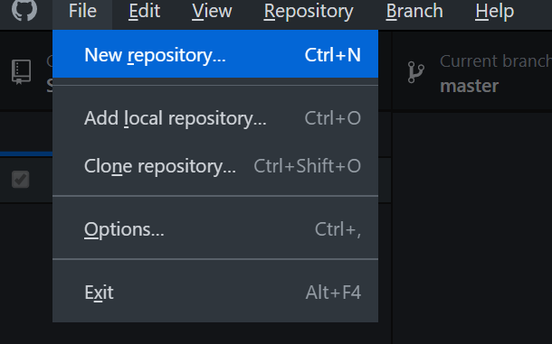
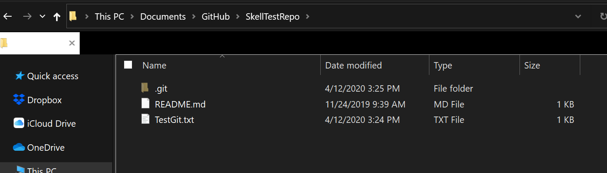
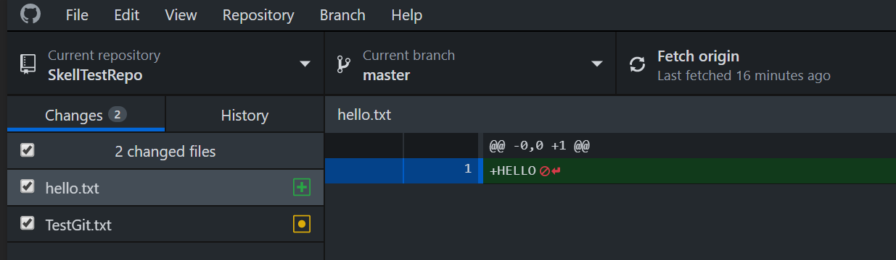
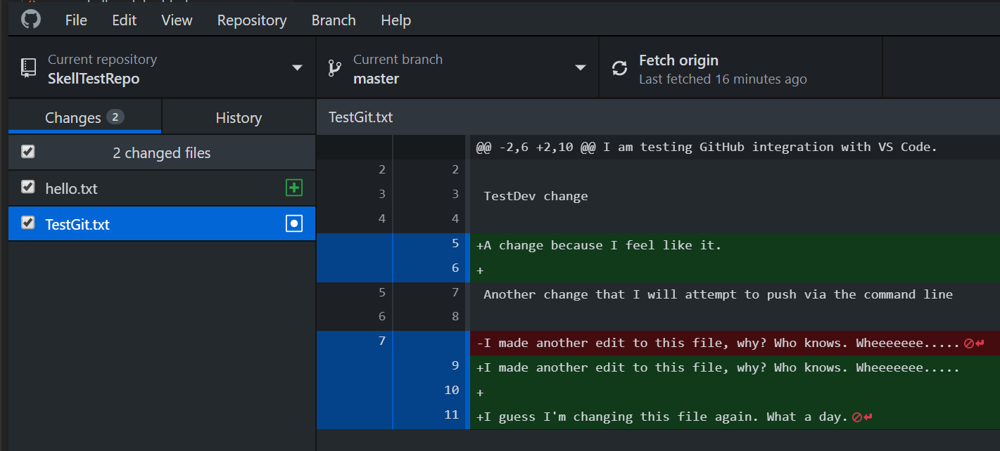
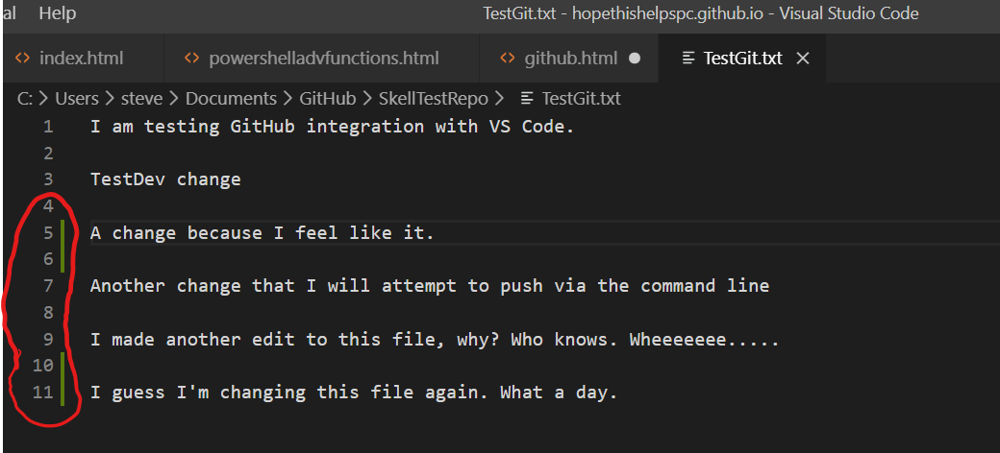
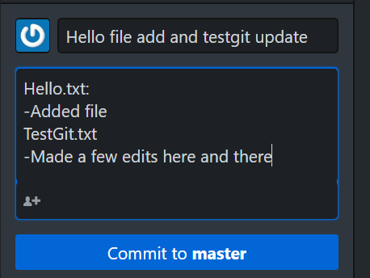
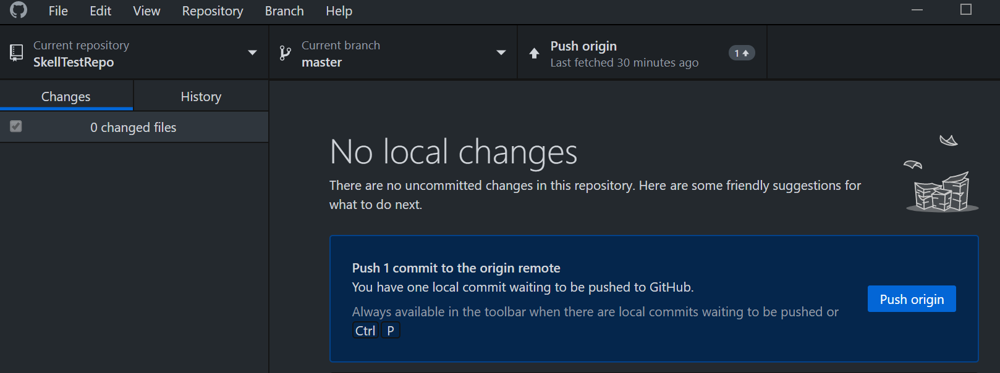
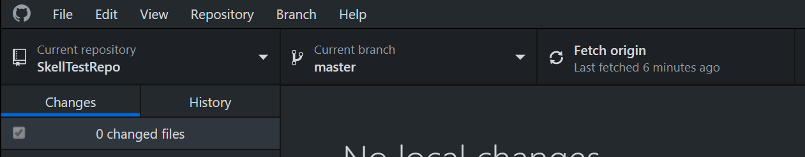
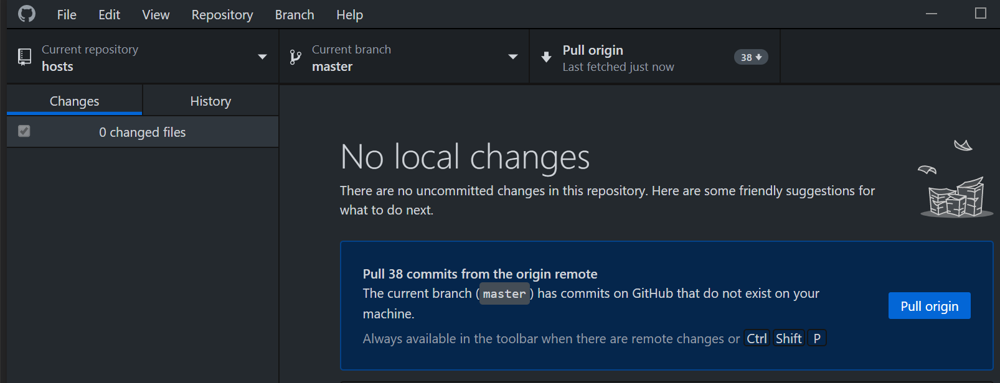

What is GitHub?
Author: Steve
I'm going to try to not write this like every other GitHub how-to blog post on the planet. Let's talk about GitHub and what is is at its core.
GitHub is effectively a platform that provides a robust hosting and version/change control. It also allows you to work collaboratively with other folks in a way that doesn't stomp all over each other. Change tracking effectively brings order to the chaos by highlighting who made what change and when/why.
To keep this super light and understandable, I'm not going to dive into every single minor detail about everything GitHub offers, but rather show you how I use it.
First and foremost, GitHub is a free-to-an-extent service for regular schmoes like you and I, as long as you don't go too overboard with the size of your project. GitHub tends to be a bit loosey-goosey with its rules. You can dive into them here and here if you'd like to see what the policies are.
You house your projects in things called "repositories." For example, I keep my home PowerShell module in its own GitHub repository on its own. I have a test repository holding a small quantity of files here if you'd like to get acquainted with how it looks/feels.
I would recommend using GitHub Desktop for management of repositories. It is a very handy program that simplifies the command-lineyness of Git and makes it easy to understand via a GUI (I'm feeling fine, I swear).

Once you have GitHub Desktop installed and you have signed into it, your first task would be to create your repository in the app. It will also ask you to specify a spot on your computer to store a local copy. Once you've figured all that out, you are good to start adding your files to that area on your computer.

Once you've started adding your files in your local repository folder, GitHub Desktop will pick up on these changes and will highlight what files were added or modified in a logical interface.


Side-note, Visual Studio Code has robust support for GitHub as well as change highlighting:

This gives you a good opportunity to review your changes and make sure they are all in good order before you make your "commit" to the repository. Think of committing as the "yes, I want to queue these changes up for a repository update" action.
You can then add a commit title and add notes. I strongly recommend being as verbose as possible when the time comes to do this, as you may need to come back to past changes and see what you did:

When you're ready, click "commit to master." You're not quite done though, now you have to actualy send this update to GitHub.com. How do we do this? GitHub Desktop will offer up a new button called "push origin" which will basically send it off to the interwebs:

Once that's done, congrats! Your changes are pushed to GitHub! You can now check your change history via the "history" tab in GitHub Desktop if you ever need to.
Now that you've gotten the hang of it, you can then make further changes as you see fit.
Now, one thing you will need to look out for is if you plan to pull down your repository on another system, you will need to make sure you are always working with the latest copy of the data. Make sure you make a habit of clicking "Fetch origin" in GitHub Desktop to make sure you don't have an old copy of the data. You can't imagine how annoying this can be if you forget:

After you've fetched the origin, if a newer version is available on the server, you can pull it down to your local system by clicking "Pull Origin" and it will update your local copy.
In this below example, you can see another repository I have in my GitHub Desktop list has been updated by other collaborators, and my local copy must be updated. You can view what changes were made via the "history" tab. I personally made no changes to this repository since then (Phew! No conflicts), so I just simply "Pull Origin" to get the latest bits:

After that, you are free to now make your changes and do your commits/pushes without any worry of change conflict. This is NOT to say that GitHub isn't designed to handle this....I am just keeping this particular blog post as simple as possible to get you acquainted with the basics.
I think you'll find that GitHub might change your life, or at least help you organize your programming/scripting/whatever life a little bit better than saving stuff to OneDrive and not quite knowing what you did between saves. I know I personally really like the workflow of GitHub Desktop and the ability to view past changes on the fly with the "history" view and the robust inline delta report.
Hope This Helps!